Measured
The Lamb shift
Willis Lamb measured a small shift in hydrogen’s energy levels in 1947 that arises from the electron’s interaction with vacuum fluctuations. It earned the 1955 Nobel Prize in Physics.
Frontier energy research
We are developing a chiral gold cavity whose geometry is designed to break a symmetry that has so far kept the vacuum’s electromagnetic field out of reach as an energy source. The C stands for chiral.

The physics
Experiment shows that the electromagnetic zero-point field has measurable effects. A theorem by Timothy Boyer explains why simple, symmetric cavities cannot turn it into work, and also what would have to change.
Measured
Willis Lamb measured a small shift in hydrogen’s energy levels in 1947 that arises from the electron’s interaction with vacuum fluctuations. It earned the 1955 Nobel Prize in Physics.
Established
A structure is chiral when it cannot be laid over its mirror image, like a left and a right hand. Light has handedness too: circularly polarised light can turn either way, and chiral structures treat the two differently.
Theory
Timothy Boyer’s framework, developed over more than five decades from 1968, treats the zero-point field as real classical electromagnetic radiation, and derives well-known phenomena from it.
Boyer’s conservative-force theorem (1975) shows that a static cavity with mirror-symmetric boundaries is conservative. Whatever it takes from one part of the field spectrum it returns to another, so no net work can be drawn over a cycle.
The theorem depends on symmetry. If the boundary treats left-handed and right-handed modes differently, the detailed balance it relies on no longer has to hold. Rather than move the walls, we change their shape: a chiral, self-similar interior inside a tetrahedral enclosure.
This is our hypothesis. It has not been confirmed by measurement.
The device
One enclosure, two counter-wound spirals, one axis. Each element has a job. The design is covered by a UK patent application (GB2609810.3).
Why gold
High conductivity (about 4.1 × 10⁷ S/m at 293 K) approaches an ideal conducting boundary. Gold electropolishes to a very smooth surface, does not oxidise, and is diamagnetic, so the geometry rather than the material sets the boundary conditions.
Arrays
Multiple cavities can be coupled to a common load, with spiral axes aligned so that their effects add. Whether they do is a question for later prototype stages.
Applications
The same geometry has uses that do not depend on net energy extraction. Energy transduction is the most ambitious, and the least proven.
Near term
Mode suppression across many decades of frequency, for sensitive electronics and precision measurement.
Near term
Preferential transmission of one circular polarisation, relevant to circular dichroism spectroscopy and optical communications.
Hypothesis
A passive geometric rectifier for ambient field fluctuations, first for low-power sensors, then scalable clean energy. Subject to further device development.
Status
We are at the start of the work. Each stage has to be passed on measurement, not on schedule.
Complete
The device is specified in detail and a UK patent application has been filed (GB2609810.3). The invention is patent pending.
In progress
We are developing a prototype of the chiral gold cavity to test the design in practice.
Next
Spectral emission and interferometric measurements, with independent verification of any result.
Integrity
Extraordinary claims need ordinary rigour. These are the questions a sceptical physicist should ask us, and our commitments in answering them.
Open risks
Commitments
Get involved
We are speaking with researchers, independent reviewers, and partners who want to test our claims or help us do it. Tell us who you are and what you would like to examine.